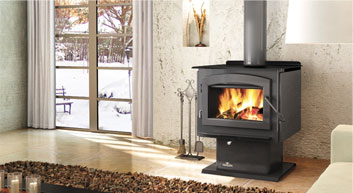

Камин как эффективная альтернатива отоплению загородного коттеджа
И не только загородного коттеджа, но и обычного поселкового дома, расположенного вне зоны расположения бытовых газовых магистралей. Действительно, с приближением холодов жителям негазифицированных посёлков и сёл следует задуматься об альтернативном варианте отопления. Традиционные угольные печи давно уже стали пережитком прошлого, а котёл на угле или дровах — это довольно скучное стандартное решение, которое не приносит особого удовольствие при использовании.
 Другое дело профессионально построенный камин, который не только согревает тело, но и радует душу. Если в процессе кладки камина использовались прогрессивные технологии с установкой высококачественного каминного оборудования, то такая отопительная система способна обогреть достаточно большие площади. Тем более, что современные топки и дымоходы рассчитаны на максимально большой КПД, а если в помещении установить камин с закрывающимися заслонками или дверцами, то теплоотдача такого теплового устройства вырастет в разы.
Дровяной камин в поселковом доме или коттедже это не просто энергоэффективная отопительная система - такой интерьерный элемент на порядок повышает эстетику и привлекательность окружающего пространства. Камин привносит в любую обстановку ощущение уюта, спокойствия и достатка, а в долгие зимние вечера потрескивающие в топке дрова помогают эмоционально расслабиться, настраиваясь на философский умиротворяющий лад.
Комфорт и технологии
Расход дров для такой системы отопления всегда будет меньше, чем поддержание огня в стандартном дровяном котле с водяным бойлером, так как каминная система обогревает стены напрямую без использования теплоносителя. Соответственно уменьшаются потери тепла с одновременным упрощением обслуживания отопительного комплекса. Батареи могут не просто потечь, а лопнуть в самые лютые морозы из-за простого недосмотра – камин же не подвержен такому неприятному явлению как «разморозка», когда вода в трубах замерзает со всеми вытекающими последствиями.
Одним словом, выбирая камин, вы приобщаетесь к добрым старым традициям, оправленным в безусловный комфорт и эффективность передовых технологий.
Камин как полезное дополнение отопительных систем
Даже если в загородном доме имеется отопительная система на угле, жидком топливе или дровах, камин может стать «запасным аэродромом», который придёт на помощь в случае выхода котла из строя. При этом все эстетические функции каминного оборудования сохраняются в полной мере. То есть, встреча Нового Года и Рождества у жарко натопленного камина придаст этим светлым праздникам принципиально новый волшебный окрас. А если вдруг с обычной отопительной системой случится какая-нибудь неполадка в разгар крещенских морозов, всегда можно рассчитывать на безотказное каминное оборудование, которое практически не знает поломок и требует минимального ухода.
Вернуться к ленте новостей